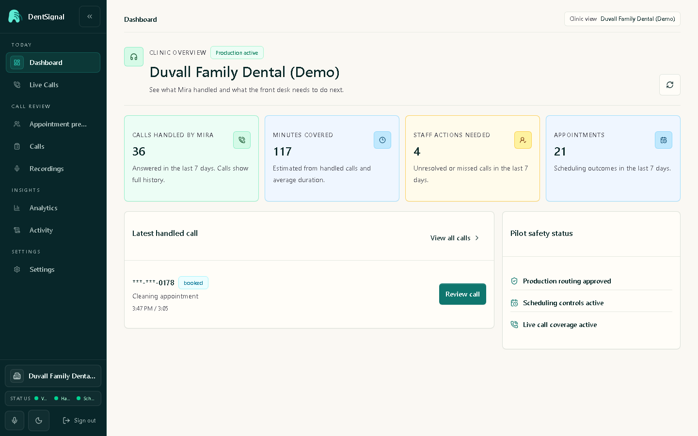

Product build · Synthetic demo data
One place to see what happened next.
DentSignal brings calls, booking state, follow-up, and guarded actions into one operator view.
- Surface
- Responsive operator dashboard
- System
- React interface with API-backed state
- Evidence
- Local synthetic fixture and automated checks

01 / Problem
A call is not finished when it ends.
Operators still need to know why someone called, whether the request is urgent, what was booked, and who owns the next action.
When those states live in separate views, follow-up becomes guesswork.
02 / Diagnosis
The missing unit was the handoff.
The interface needed to connect each call to a review state, appointment preview, escalation boundary, and visible owner rather than merely display a transcript.
03 / Fix
Build the queue around decisions.
- Unified call, appointment, analytics, and follow-up state.
- Responsive layouts for desktop review and mobile checks.
- Guarded workflows that keep demo, evaluation, and live routing distinct.
- API-backed state plus automated frontend and backend validation.
04 / Result
A workflow that can be inspected before it is trusted.
The synthetic fixture makes the interface, states, and handoff logic reviewable without showing patient data or claiming a clinic outcome.
This is engineering proof, not customer proof.
05 / Boundary
What this evidence does not claim.
No customer, revenue, clinic adoption, or patient outcome is represented here. The screenshot comes from a local synthetic demo fixture.
Back to all work